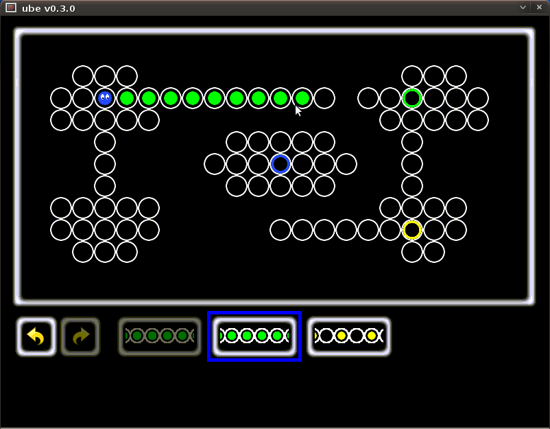

Ube is a puzzle game.
You are a little blue character who has to traverse mazes. The trick is you can only move a limited number of times, in a limited number of ways. Along the way, you can pick items that give you new moves, to try and go further.
The game is played with the mouse. It is pretty forgiving : you have unlimited undo / redo, and the path you can take is displayed as soon as you move the mouse over a place in the maze.
For those interested, it is an evolution of Boots-puzzle, an older game I wrote in ruby.
It's free software available under the MIT License.
It looks like this :
In this screen, the little blue ball (with cute eyes) is you. The exit is the other "blue" cell.
You have two moves available. The "green" move lets you advance one cell at a time. The "yellow" moves lets you jump two cells at a time. Moves are represented by buttons at the bottom of the screen.
There are two colored cells (one in green, one in yellow). If you reach those cells, you get one new available move.
I know, this doesn't look great, but I am no artist :( ...
Currently the game only works on PC (i386, for those who know what it means.) I tested it for GNU/Linux and Microsoft Windows (tm).
| GNU/Linux Debian package (v0.3.1) | |
| Microsoft Windows (tm) Installer (v0.3.1) | |
| tar.gz sources (v0.3.1) |
An Ubuntu/Debian package is available : Ube 0.3.1 Debian package
I've only tested the package on a Ubuntu 9.10 distribution.
Sources, for the adventurous : in tar.gz format
Building is a matter of installing the proper dependencies, and using configure ; make : make install. See INSTALL for more info..
A Microsoft Windows (tm) version is available : Ube 0.3.1 for Windows. It is a self-contained installer. No known virus, but check it if you're paranoid ;)
I've only tested it on Windows XP (tm), so if you have any issue with Windows Vista (tm) or Windows Seven (tm), drop a note !
Project is hosted on github : github page.
Git clone URL is : git://github.com/phtrivier/ube.git
A 'Ube' entry should appear in your menu. From command-line, on GNU/Linux, you can start the game with 'ube'.
Okay, you can shout at phtrivier AT yahoo DOT fr, I might even be able to help !
I'am glad you mentionned it. I know. Thanks for nicely offering to help ;)
I know. What's in a name anyway ? I guess sometimes you just type a couple of letter on your keyboard, the acronym is not taken, and you decide it might as well do for a name.
There is none for the moment, there will definitely be a 'tutorial' sometimes.